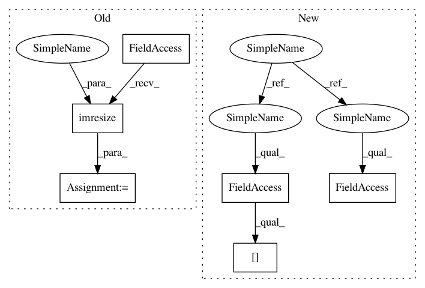

87f878b96bf00cb19d850992f01d9370b57b8345,skvideo/measure/niqe.py,,_get_patches_generic,#,52
Before Change
img = img.astype(np.float32)
img2 = scipy.misc.imresize(img, 0.5, interp="bicubic", mode="F")
mscn1, var, mu = compute_image_mscn_transform(img)
mscn1 = mscn1.astype(np.float32)
After Change
img = img[:, :-woffset]
img = img.astype(np.float32)
img2 = np.array(Image.fromarray(img).resize(
(int(0.5 * img.shape[0]), int(img.shape[1] * 0.5)),
resample=PIL.Image.BICUBIC)
)
In pattern: SUPERPATTERN
Frequency: 3
Non-data size: 6
Instances
Project Name: scikit-video/scikit-video
Commit Name: 87f878b96bf00cb19d850992f01d9370b57b8345
Time: 2019-10-21
Author: stg7@gmx.de
File Name: skvideo/measure/niqe.py
Class Name:
Method Name: _get_patches_generic
Project Name: scikit-video/scikit-video
Commit Name: 87f878b96bf00cb19d850992f01d9370b57b8345
Time: 2019-10-21
Author: stg7@gmx.de
File Name: skvideo/measure/niqe.py
Class Name:
Method Name: _get_patches_generic
Project Name: scikit-video/scikit-video
Commit Name: 87f878b96bf00cb19d850992f01d9370b57b8345
Time: 2019-10-21
Author: stg7@gmx.de
File Name: skvideo/measure/brisque.py
Class Name:
Method Name: brisque_features
Project Name: NervanaSystems/coach
Commit Name: 30c2b2fc4586d1bf6b50e1b6f2c2a5c04acf2947
Time: 2019-05-23
Author: gal.leibovich@intel.com
File Name: rl_coach/filters/observation/observation_rescale_size_by_factor_filter.py
Class Name: ObservationRescaleSizeByFactorFilter
Method Name: filter